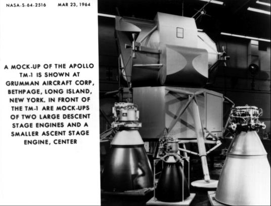

At various stages of lunar module design, mockup reviews were conducted to demonstrate progress and ferret out weaknesses. These inspections were formal occasions, with a board composed of customer and contractor officials and presided over by a chairman from the Apollo office in Houston. Usually present were top management personnel from the NASA Office of Manned Space Flight in Washington and from the field centers, as well as a number of astronauts. The vehicle was thrown open for inspection, and the astronauts were expected to climb in, out, over, and around, to get a feel for the craft.
The first of these reviews, on "M-1" (a wooden mockup of the crew compartment), took place 16–18 September 1963. In general, the cockpit layout was acceptable, although the locations of some equipment and the arrangement of controls and instruments still had to be settled. The astronauts liked the visibility through the triangular, canted windows and the standup crew positions; but they wanted the instrument panel changed so both flight stations would have identical displays.38

TM-1 mockup of the lunar module with propulsion system models. The TRW version of the descent engine (left) won the development contract. The model of the ascent engine (center) submitted by Bell Aerospace Corp. subsequently competed with Rocketdyne's version, and both companies later participated in the development.
About six months later, 24–26 March 1964, Grumman showed its second model, "TM-1," a wooden representation of a complete vehicle. Again attention centered on the cockpit arrangement: support and restraint systems, equipment layout, lighting provisions, location of displays and controls, and general mobility within the cabin and through the hatches. On this occasion, a number of changes were suggested. After evaluation and approval by the review board, these modifications were incorporated into the TM-1 to make up a "design freeze" for constructing an all-metal model, the final review mockup.
TM-1 was far more than just a means to get to the next, more advanced, mockup, however. For several months, Grumman designers used it to study astronaut mobility and spacecraft-spacesuit interfaces. Astronauts and company personnel got into and out of suits inside the cabin, practiced stowing and recharging backpacks, and checked out suit hose connections with the spacecraft's environmental control system.39
The most important mockup review, in October 1964, centered on "M-5" - a remarkably detailed model of a complete spacecraft, including some actual flight equipment inside the cockpit. Even before the inspection, its prospects for success were discussed in a senior staff meeting at Houston on 2 October. Comparing Grumman's planned M-5 review with a review held a few days before on the Block II command module at North American, which one official considered "a good display for a salesman [but] a poor engineering tool," Max Faget said that, in his opinion, North American representatives should go to Grumman to "see what a mockup should look like." M-5 was the product of two years of configuration studies and the lessons of two previous inspections.
Formal review of M-5 led off with an examination on 5 and 6 October by the astronaut corps. On the following day, MSC Director Gilruth and virtually all the management, engineering, and Apollo leaders from Houston descended on Grumman to inspect the cabin, electrical wiring, plumbing, flight controls, displays, radars, propulsion systems (ascent, descent, and reaction control), environmental control system, communications system, structures and landing gear, and stowage for scientific equipment. No piece of the vehicle escaped the review party's scrutiny and evaluation. The Mockup Review Board* met on 8 October, examined the 148 proposed changes, and approved 120 of them. These were mostly minor, and none forced any major redesign. M-5 marked the culmination of the configuration definition.40
* Board members were Maynard, Rector, Faget, Kraft, and Donald Slayton from Houston and R. W. Carbee and Kelly from Bethpage.
38. "Board Report for NASA Inspection and Review of M-1 Mock-up Lunar Excursion Module, September 16, 17, and 18, 1963," MSC LEM-R-63-1; Slayton to Mgr., LEM Eng. Off., "Requirement for Dual Flight Controls and Displays in the LEM," 27 Nov. 1963; Project Apollo Quarterly Status Report no. 5, p. 3.
39. MSC, "Board Report for NASA Inspection and Review of TM-1 Mock-up, Lunar Excursion Module, March 19–26, 1964"; MSC, ASPO Management Report for 16–23 April 1964.
40. M. Scott Carpenter, recorder, minutes of MSC Senior Staff Meetings, 2 Oct., p. 2, and 9 Oct. 1964, p. 1; MSC, "Board Report for NASA Inspection and Review of M-5 Mockup, Lunar Excursion Module, October 5–8, 1964"; Rector to Grumman, Attn.: Mullaney, "Board Report for NASA Inspection and Review of M-5 Mockup, Lunar Excursion Module," 19 Nov. 1964.